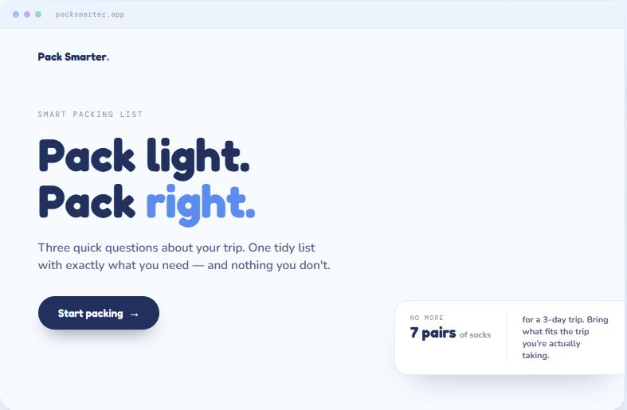
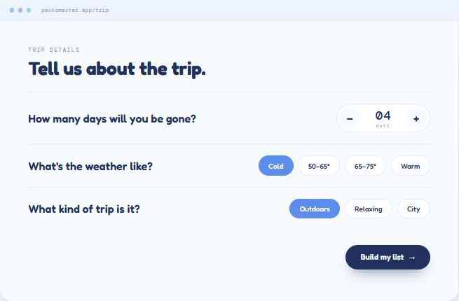
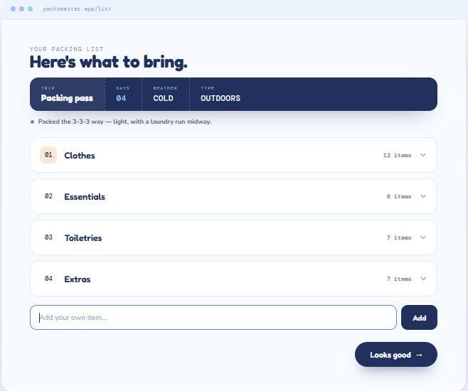
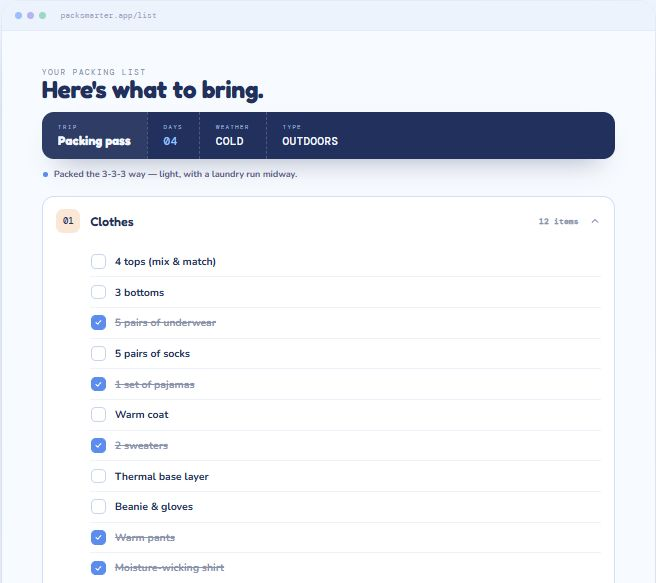
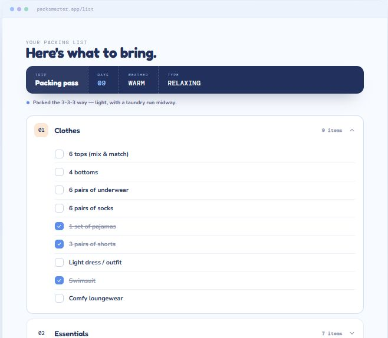

Pack light. Pack right. Three quick questions about a trip, one tidy list with exactly what you need — and nothing you don't.

The problem
Travel makes it easy to slip up — forget the charger, overpack five "just in case" outfits, or land somewhere without the one thing you actually needed. The usual packing lists don't help, because they're the same no matter where you're going: a flat checklist that tells you to bring seven pairs of socks for a three-day trip.
I wanted a list that adapts to the trip you're actually taking — and that tells you to bring less.
What I owned
Pack Smarter is a solo project, so all of it is mine: the concept, the flow, the interface, and the packing logic underneath. The part I took furthest was that logic — the rules that decide what lands on your list and how much of it.
I designed it to behave like an experienced traveler rather than a multiplication table. That one decision — that the smart part should live in the quantities, not just the screens — shaped everything else about the product.
Who it's for
I designed around the failure modes I kept seeing in real packing — each one a different reason a generic list lets you down.
Throws in five "just in case" outfits for a weekend. Needs a list confident enough to say less.
Nails the clothes, lands without the charger. Needs the essentials handled automatically.
A cold 4-day hike one month, a warm 9-day trip the next. Needs the list to genuinely change.
The approach
The whole product turns on three inputs and a set of rules behind them. Here's how I built the logic up.
Days, weather, and trip type — a stepper for the day count and pill toggles for the rest (Cold / 50–65° / 65–75° / Warm, and Outdoors / Relaxing / City). The entire input fits on one short screen.

Rather than scaling linearly — nine days does not mean nine pairs of socks — the list packs light, assuming a laundry run midway. Every list carries a "packing pass" summary and a note explaining exactly why it's capped.

Weather and trip type change what appears, not only how much. A cold outdoors trip surfaces a thermal base layer, beanie and gloves, and hiking boots; a warm relaxing trip swaps in a swimsuit, sandals, and a sun hat.
The list is a tool, not a printout — items check off with a strikethrough as the bag fills, categories show live counts, and an "add your own item" field covers what no rule could guess.
The result
The clearest proof the logic works is putting two trips side by side. The same three questions produce two lists that don't look alike — in contents and in counts.

